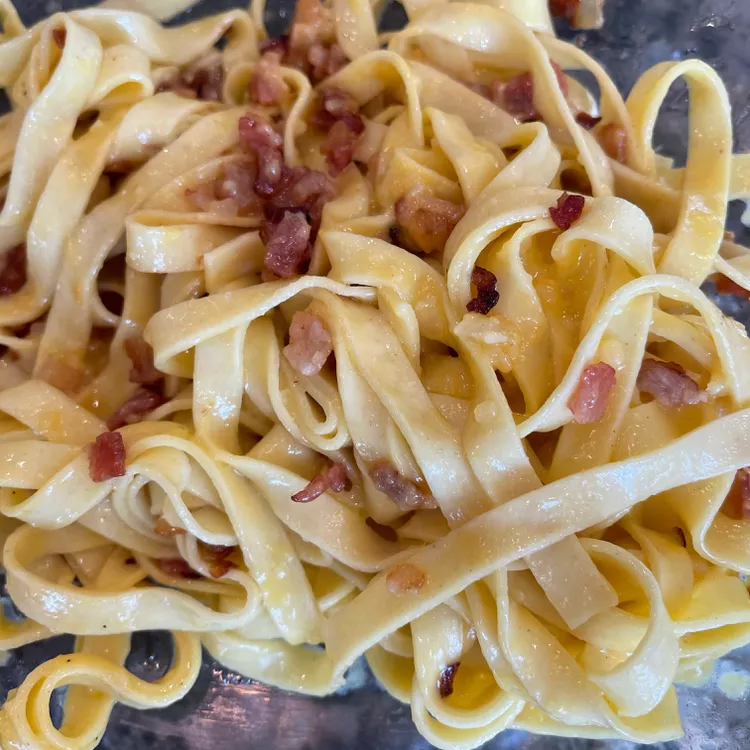

Fettuccine Carbonara

Description
Fettuccine Carbonara is a classic Italian pasta dish known for its creamy and rich texture. Traditionally made with fettuccine or spaghetti, it's tossed in a sauce of eggs, Parmesan cheese, and crispy pancetta or guanciale. The heat from the pasta cooks the egg mixture, creating a silky, cheesy coating. It's a quick and flavorful dish, often seasoned with black pepper and sometimes garnished with fresh parsley. Despite its luxurious taste, Carbonara is simple and made without any cream, relying on the eggs and cheese for its creamy consistency.
Ingredients
- 12 oz (340 g) fettuccine pasta
- 6 oz (170 g) pancetta or guanciale, diced
- 3 large eggs
- 1 cup (100 g) freshly grated Parmesan cheese (or Pecorino Romano for a more authentic flavor)
- 2 cloves garlic, minced (optional)
- Salt and freshly ground black pepper to taste
- Fresh parsley for garnish (optional)
Instructions
-
Cook the Fettucine:
- Bring a large pot of salted water to a boil.
- Add the fettuccine and cook according to package instructions until al dente. Reserve 1 cup of pasta water, then drain the pasta.
-
Prepare the Pancetta:
- In a large skillet over medium heat, cook the diced pancetta (or guanciale) until it becomes crispy, about 5-7 minutes.
- If you like, add minced garlic during the last minute of cooking.
- Remove from heat but leave the pancetta in the pan.
-
Make the Carbonara Sauce:
- In a bowl, whisk together the eggs, grated Parmesan cheese, a pinch of salt, and plenty of freshly ground black pepper.
-
Combine Everything:
- Add the drained pasta to the skillet with the pancetta and toss to combine.
- Quickly stir in the egg and cheese mixture, ensuring the eggs do not scramble. Add some reserved pasta water as needed to create a creamy sauce (start with 1/4 cup and add more if needed).
-
Serve:
- Serve immediately with extra grated Parmesan cheese and freshly ground pepper on top.
- Garnish with fresh parsley if desired.